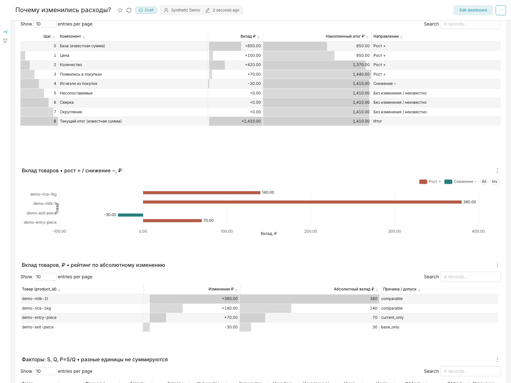
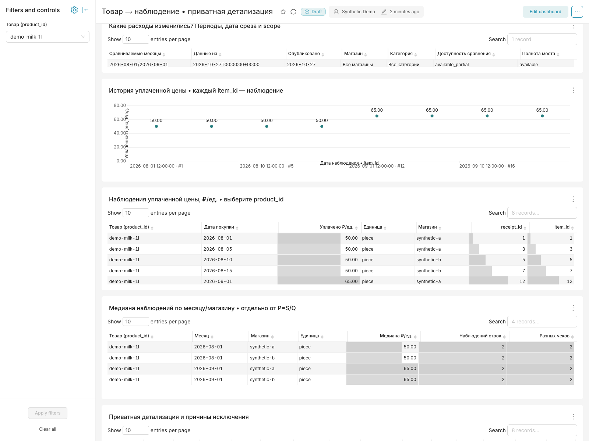
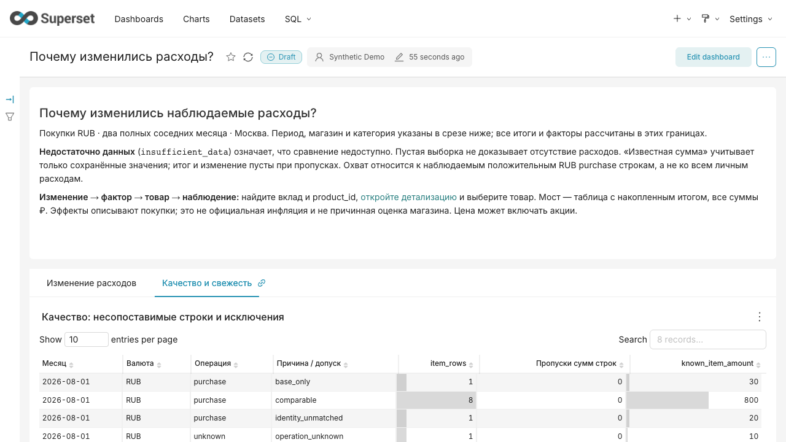

+420 ₽
Главный фактор — количество
Сопоставимых молока и риса купили по 12 единиц вместо 8. Вклад количества — 75% общего прироста расходов.
Цена, количество или состав покупок? Tratte проводит от общего отклонения до товара и исходного наблюдения — и показывает, какой части данных можно доверять.
Все данные и результаты ниже — синтетическиеАвгуст → сентябрь 2026 · два вымышленных магазина · рубли · полный месяц по Москве

Сопоставимых молока и риса купили по 12 единиц вместо 8. Вклад количества — 75% общего прироста расходов.
Молоко: 50 → 65 ₽/л, вклад цены +150 ₽. Рис: 50 → 45 ₽/кг, вклад −50 ₽. В сумме +100 ₽ при среднем количестве 10 единиц каждого товара.
В сентябре сопоставимы 1 320 из 1 410 ₽ положительных строк. Ещё 70 ₽ — новый товар, 20 ₽ — неоднозначная позиция. Неизвестная операция на 10 ₽ исключена из покупок.
Упаковка — 1 л. Август: 8 л × 50 ₽ = 400 ₽. Сентябрь: 12 л × 65 ₽ = 780 ₽. Симметричное разложение даёт +150 ₽ цены и +230 ₽ количества. Вклад риса: −50 ₽ цены и +190 ₽ количества. Вместе это +520 ₽; ещё +40 ₽ даёт вход и выход товаров.

850 + 100 + 420 + 70 − 30 + 0 + 0 + 0 = 1 410 ₽. Нулевой вклад несопоставимых строк означает, что их сумма не изменилась. Это не означает, что все товары сопоставлены.

Третий месяц в публичной fixture — июль. Он включает чек без итога и
позицию без известной упаковки. Для июля нельзя объявить полный мост:
insufficient_data. Главный сюжет сравнивает только август
и сентябрь.
Сервис читает письма с чеками, сохраняет дату покупки, позиции и суммы. Подтверждённый каталог связывает товары с единицами и упаковками. Витрины считают сравнение в одной read-only транзакции; Superset читает зафиксированный snapshot с версией mapping и хешами SQL.
Для сопоставимых товаров: P = S/Q; цена = (P₁ − P₀) × (Q₁ + Q₀)/2; количество = (Q₁ − Q₀) × (P₁ + P₀)/2. Вход, выход, несопоставимые строки и сверка считаются отдельно. Разные физические единицы не складываются.
README, словарь, контрольные итоги и SQL · Экспорт Superset и инструкция импорта
Это бухгалтерское разложение изменения расходов, а не причинная оценка инфляции или экономии. Оно зависит от полноты чеков, подтверждённого соответствия товаров и корректных единиц. Порог — минимум два разных чека в каждом месяце. Неполные суммы и нулевые знаменатели показываются как N/A.
Никакие реальные покупки, история пользователя или фискальные данные здесь не публикуются. Скриншоты #6 и новая fixture имеют одинаковые контрольные суммы августа/сентября, но разные технические ID snapshot и строк. В скриншотах #6 количество дано в упаковках; новая fixture переводит упаковки 1 л / 1 кг в литры и килограммы — числа для этих упаковок совпадают. Synthetic результаты не описывают реальные расходы.
Подход переносится на счета поставщиков, ассортимент и закупки подразделений: согласовать периметр, собрать каталог и единицы, разложить отклонение и оставить путь к источнику. Внешний аналитик может передать проверенные витрины, дашборд и правила контроля качества.
В этом кейсе нет заявленной клиентской экономии, достигнутого ROI или процентов улучшения. Результат — воспроизводимое объяснение synthetic отклонения и прозрачные границы расчёта.